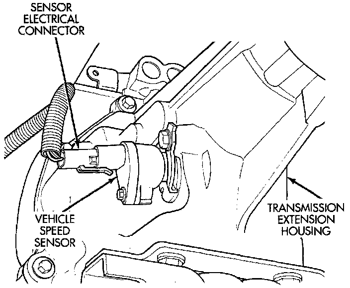
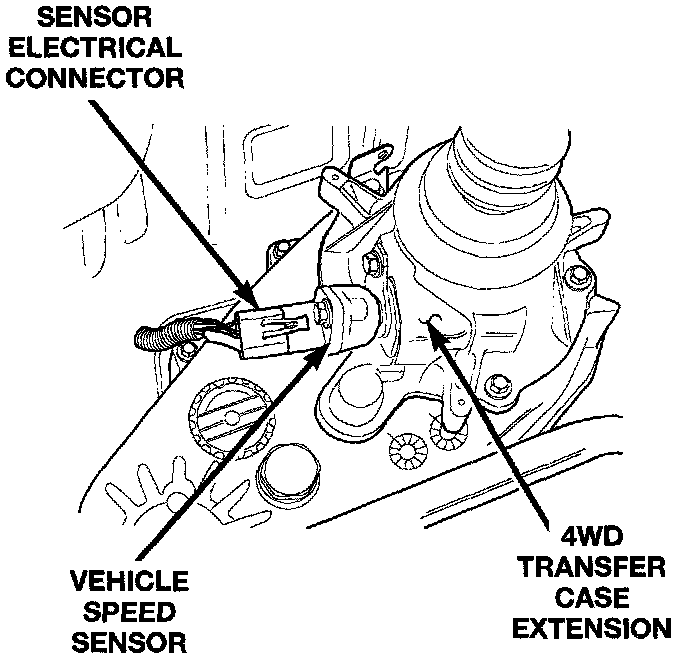
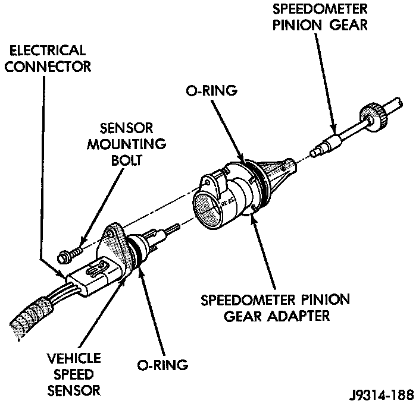

Vehicle Speed Sensor: Service and Repair
VEHICLE SPEED SENSORFig. 91 VSS - 2WD:

Fig. 92 VSS - 4WD:

The Vehicle Speed Sensor (VSS) is located on the speedometer pinion gear adapter (Fig. 91) or (Fig. 92). The pinion gear adapter is located on the extension housing of the transmission (drivers side).
REMOVAL
1. Raise and support vehicle.
2. Disconnect the electrical connector from the sensor.
Fig. 93 VSS R&R:

3. Remove the sensor mounting bolt (Fig. 93).
4. Remove the sensor (pull straight out) from the speedometer pinion gear adapter (Fig. 93). Do not remove the gear adapter from the transmission.
INSTALLATION
1. Clean the inside of speedometer pinion gear adapter before installing speed sensor.
2. Install sensor into speedometer gear adapter and install mounting bolt. Before tightening bolt, verify speed sensor is fully seated (mounted flush) to speedometer pinion gear adapter.
3. Tighten sensor mounting bolt to 2.2 Nm (20 in. lbs.) torque.
4. Connect electrical connector to sensor.